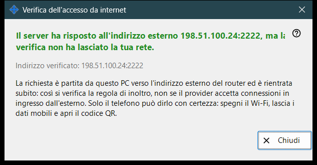
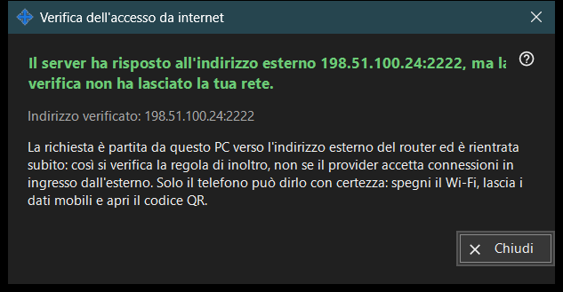

Verifica dell'accesso da internet
Scopo
Verifica da questo PC se l'indirizzo condiviso risponde come un server SFTP. Si apre dal pulsante «Verifica l'accesso da internet» della finestra principale e mostra l'indirizzo verificato, un verdetto e una spiegazione.


In questo ordine
- Apri la finestra; mostra l'indirizzo e avvia subito la verifica.
- Attendi il titolo del risultato.
- Leggi la riga di dettaglio sotto di esso.
- Se il risultato non è conclusivo, ripeti la verifica dal telefono con il Wi-Fi spento e i dati mobili attivi.
- Premi «Chiudi».
Gli elementi
Indirizzo verificato
«Indirizzo verificato: ..» mostra host e porta. Mentre la verifica è in corso, la finestra scrive «Prova di ..». Se non è noto nessun indirizzo il risultato è «Nessun indirizzo internet ancora.»; un indirizzo malformato dà «Indirizzo non valido.»
Verdetti
«Server SFTP raggiungibile» - la porta ha risposto con un banner SFTP. «Porta aperta, ma nessuna risposta SFTP» - qualcosa è in ascolto sulla porta, ma non è il nostro programma; controlla che la regola del router porti a questo PC e alla porta della condivisione. Una connessione chiusa prima della risposta può indicare il limite di connessioni; riprova. Nessuna risposta da questo PC significa che il router potrebbe bloccare dall'interno il proprio indirizzo.
Perché un risultato può non essere conclusivo
La richiesta esce da questo PC verso l'indirizzo esterno del router e torna subito all'interno, quindi verifica la regola di inoltro e non se il provider lascia entrare le connessioni dall'esterno. Solo il telefono può chiarirlo: spegni il suo Wi-Fi, lascia attivi i dati mobili e apri il codice QR. Se ancora non riesce a connettersi, configura l'inoltro delle porte con il pulsante «Come configurare l'accesso da internet».
Impostazioni del gestore · Impostazioni condivisione SFTP · Impostazioni server di scambio